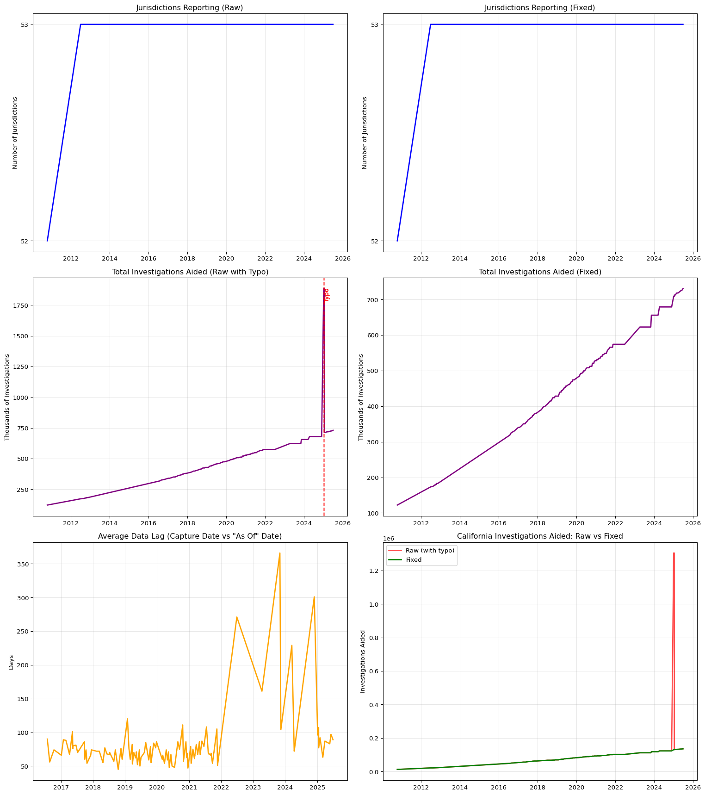

Installing beautifulsoup4...
Requirement already satisfied: beautifulsoup4 in ./podfridge-db-env/lib/python3.13/site-packages (4.13.4)
Requirement already satisfied: soupsieve>1.2 in ./podfridge-db-env/lib/python3.13/site-packages (from beautifulsoup4) (2.7)
Requirement already satisfied: typing-extensions>=4.0.0 in ./podfridge-db-env/lib/python3.13/site-packages (from beautifulsoup4) (4.14.1)NDIS Database Analysis
Parsing FBI National DNA Index System Statistics from Wayback Machine
Introduction
This analysis processes NDIS (National DNA Index System) statistics from archived FBI web pages. We parse 300+ HTML snapshots from the Wayback Machine to track how the DNA database has grown from 2010 to 2025.
Setup and Configuration
from pathlib import Path
import re, json, requests, time
from datetime import datetime
import pandas as pd
from bs4 import BeautifulSoup
from tqdm.auto import tqdm
import matplotlib.pyplot as plt
import numpy as np
# Configuration
BASE_DIR = Path(".") # Current directory
ROOT = BASE_DIR
HTML_DIR = ROOT / "output" / "wayback_html"
HTML_DIR.mkdir(parents=True, exist_ok=True)
CSV_PATH = ROOT / "output" / "ndis_state_metrics.csv"
# Jurisdiction name standardization mapping
JURISDICTION_NAME_MAP = {
'D.C./FBI Lab': 'DC/FBI Lab',
'US Army': 'U.S. Army'
}
# Known data typos to fix
KNOWN_TYPOS = [
{
'timestamp': '20250105164014',
'jurisdiction': 'California',
'field': 'investigations_aided',
'wrong_value': '1304657', # How it parses
'correct_value': '130465' # What it should be
},
{
'timestamp': '20250116205311',
'jurisdiction': 'California',
'field': 'investigations_aided',
'wrong_value': '1304657',
'correct_value': '130465'
}
]
print(f"HTML directory: {HTML_DIR}")HTML directory: output/wayback_htmlWayback Machine Functions
def make_request_with_retry(params, max_retries=3, initial_delay=5):
"""Make a request with exponential backoff retry logic"""
base = "https://web.archive.org/cdx/search/cdx"
for attempt in range(max_retries):
try:
r = requests.get(base, params=params, timeout=30)
if r.status_code == 200:
return r
elif r.status_code == 429: # Rate limited
wait_time = initial_delay * (2 ** attempt)
print(f" Rate limited. Waiting {wait_time} seconds...")
time.sleep(wait_time)
else:
return r
except requests.exceptions.ConnectionError as e:
wait_time = initial_delay * (2 ** attempt)
print(f" Connection error. Waiting {wait_time} seconds before retry {attempt + 1}/{max_retries}")
time.sleep(wait_time)
except Exception as e:
print(f" Unexpected error: {e}")
return None
return NoneSearch for All NDIS Snapshots
Show search function code
def search_all_ndis_snapshots():
"""Search for NDIS snapshots across all known URL variations"""
# Search for both http and https variants
protocols = ["http://", "https://"]
subdomains = ["www", "le", "*"] # Known subdomains plus wildcard
all_rows = []
seen_timestamps = set()
# First, try broad searches with protocol wildcards
print("Starting wildcard searches...")
for protocol in protocols:
for subdomain in subdomains:
pattern = f"{protocol}{subdomain}.fbi.gov/*ndis-statistics*"
print(f"\nSearching: {pattern}")
params = {
"url": pattern,
"matchType": "wildcard",
"output": "json",
"fl": "timestamp,original,mimetype,statuscode",
"filter": ["statuscode:200", "mimetype:text/html"],
"limit": "10000",
}
r = make_request_with_retry(params)
if r and r.status_code == 200:
data = json.loads(r.text)
if len(data) > 1:
new_rows = 0
for row in data[1:]:
if row[0] not in seen_timestamps:
all_rows.append(row)
seen_timestamps.add(row[0])
new_rows += 1
print(f" → Found {new_rows} new snapshots")
else:
print(f" → No results")
else:
print(f" → Failed after retries")
# Always wait between requests to avoid rate limiting
time.sleep(2)
# Also search your specific known URLs with both protocols
known_paths = [
"www.fbi.gov/about-us/lab/codis/ndis-statistics",
"www.fbi.gov/about-us/laboratory/biometric-analysis/codis/ndis-statistics",
"www.fbi.gov/services/laboratory/biometric-analysis/codis/ndis-statistics",
"le.fbi.gov/science-and-lab/biometrics-and-fingerprints/codis/codis-ndis-statistics",
]
print("\n\nStarting exact URL searches...")
for path in known_paths:
for protocol in protocols:
url = f"{protocol}{path}"
print(f"\nSearching: {url}")
params = {
"url": url,
"matchType": "exact",
"output": "json",
"fl": "timestamp,original,mimetype,statuscode",
"filter": ["statuscode:200", "mimetype:text/html"],
"limit": "10000",
}
r = make_request_with_retry(params)
if r and r.status_code == 200:
data = json.loads(r.text)
if len(data) > 1:
new_rows = 0
for row in data[1:]:
if row[0] not in seen_timestamps:
all_rows.append(row)
seen_timestamps.add(row[0])
new_rows += 1
print(f" → Found {new_rows} new snapshots")
else:
print(f" → No results")
else:
print(f" → Failed after retries")
# Always wait between requests
time.sleep(2)
# Create DataFrame
snap_df = (pd.DataFrame(
all_rows,
columns=["timestamp", "original", "mimetype", "status"])
.sort_values("timestamp")
.reset_index(drop=True))
return snap_df
# Check if we already have snapshot data or need to search
snapshot_csv = HTML_DIR.parent / 'snapshots_found.csv'
if snapshot_csv.exists():
print("Loading existing snapshot list...")
snap_df = pd.read_csv(snapshot_csv)
print(f"Loaded {len(snap_df)} snapshots")
else:
print("Searching for all NDIS snapshots...")
snap_df = search_all_ndis_snapshots()
if len(snap_df) > 0:
snap_df.to_csv(snapshot_csv, index=False)
print(f"\nSaved {len(snap_df)} snapshots to {snapshot_csv}")
if len(snap_df) > 0:
print(f"\nTotal unique snapshots found: {len(snap_df):,}")
print(f"Unique URLs found: {snap_df['original'].nunique()}")
print("\nUnique URL patterns found:")
for url in sorted(snap_df['original'].unique()):
print(f" {url}")Loading existing snapshot list...
Loaded 317 snapshots
Total unique snapshots found: 317
Unique URLs found: 8
Unique URL patterns found:
http://www.fbi.gov/about-us/lab/codis/ndis-statistics
http://www.fbi.gov/about-us/lab/codis/ndis-statistics/
http://www.fbi.gov:80/about-us/lab/codis/ndis-statistics
http://www.fbi.gov:80/about-us/lab/codis/ndis-statistics/
https://le.fbi.gov/science-and-lab/biometrics-and-fingerprints/codis/codis-ndis-statistics
https://www.fbi.gov/services/laboratory/biometric-analysis/codis/ndis-statistics
https://www.fbi.gov/services/laboratory/biometric-analysis/codis/ndis-statistics/
https://www.fbi.gov/services/laboratory/biometric-analysis/codis/ndis-statistics//Download Functions
def download_with_retry(url, max_retries=3, initial_delay=5, consecutive_failures=0):
"""Download with adaptive retry logic based on consecutive failures"""
if consecutive_failures > 0:
extra_wait = consecutive_failures * 10
print(f"\n Adding {extra_wait}s cooldown due to {consecutive_failures} consecutive failures...")
time.sleep(extra_wait)
for attempt in range(max_retries):
try:
response = requests.get(url, timeout=30)
response.raise_for_status()
return response, True
except requests.exceptions.ConnectionError as e:
wait_time = initial_delay * (2 ** attempt)
print(f"\n Connection error. Waiting {wait_time} seconds before retry {attempt + 1}/{max_retries}")
time.sleep(wait_time)
except requests.exceptions.HTTPError as e:
if e.response.status_code == 429:
wait_time = initial_delay * (2 ** attempt) * 2
print(f"\n Rate limited (429). Waiting {wait_time} seconds...")
time.sleep(wait_time)
else:
print(f"\n HTTP Error: {e}")
return None, False
except Exception as e:
print(f"\n Unexpected error: {e}")
return None, False
return None, False
def download_missing_snapshots(snap_df, output_folder):
"""Download HTML snapshots with resume capability"""
# Check what we already have
existing_files = list(output_folder.glob("*.html"))
existing_timestamps = {f.stem for f in existing_files}
print(f"\nFiles already downloaded: {len(existing_files)}")
# Check what needs to be downloaded
to_download = []
for _, row in snap_df.iterrows():
timestamp = row['timestamp']
url = row['original']
filename = output_folder / f"{timestamp}.html"
if timestamp not in existing_timestamps and not filename.exists():
to_download.append((timestamp, url, filename))
print(f"Files to download: {len(to_download)}")
if len(to_download) == 0:
print("\n✓ All files already downloaded! Nothing to do.")
return
# Download configuration
BATCH_SIZE = 15
PAUSE_BETWEEN_DOWNLOADS = 3
PAUSE_BETWEEN_BATCHES = 45
PAUSE_AFTER_FAILURE = 60
# Track statistics
successful_downloads = 0
failed_downloads = []
consecutive_failures = 0
# Download in batches
for i in range(0, len(to_download), BATCH_SIZE):
batch = to_download[i:i + BATCH_SIZE]
batch_num = (i // BATCH_SIZE) + 1
total_batches = (len(to_download) + BATCH_SIZE - 1) // BATCH_SIZE
print(f"\n{'='*60}")
print(f"Batch {batch_num}/{total_batches} ({len(batch)} files)")
print(f"Overall progress: {len(existing_timestamps) + successful_downloads}/{len(snap_df)} total files")
print(f"{'='*60}")
for j, (timestamp, url, filename) in enumerate(batch, 1):
# Double-check file doesn't exist
if filename.exists():
print(f"\n[{j}/{len(batch)}] {timestamp} - Already exists, skipping...")
continue
wayback_url = f"https://web.archive.org/web/{timestamp}/{url}"
print(f"\n[{j}/{len(batch)}] Downloading {timestamp}...", end="")
response, success = download_with_retry(wayback_url, consecutive_failures=consecutive_failures)
if response and response.status_code == 200:
try:
with open(filename, 'w', encoding='utf-8') as f:
f.write(response.text)
print(" ✓ Success")
successful_downloads += 1
consecutive_failures = 0
except Exception as e:
print(f" ✗ Error saving file: {e}")
failed_downloads.append((timestamp, url, str(e)))
consecutive_failures += 1
else:
print(" ✗ Failed after retries")
failed_downloads.append((timestamp, url, "Download failed"))
consecutive_failures += 1
if j < len(batch):
print(f" Taking {PAUSE_AFTER_FAILURE}s break after failure...")
time.sleep(PAUSE_AFTER_FAILURE)
continue
if j < len(batch) and consecutive_failures == 0:
print(f" Waiting {PAUSE_BETWEEN_DOWNLOADS} seconds...")
time.sleep(PAUSE_BETWEEN_DOWNLOADS)
if i + BATCH_SIZE < len(to_download):
print(f"\nBatch complete. Pausing {PAUSE_BETWEEN_BATCHES} seconds...")
print(f"This session: {successful_downloads} downloaded, {len(failed_downloads)} failed")
time.sleep(PAUSE_BETWEEN_BATCHES)
# Final summary
print(f"\n{'='*60}")
print(f"Download session complete!")
print(f" Successfully downloaded: {successful_downloads}")
print(f" Failed downloads: {len(failed_downloads)}")
if failed_downloads:
print(f"\nFailed downloads:")
for timestamp, url, error in failed_downloads[:10]:
print(f" {timestamp}: {error}")
if len(failed_downloads) > 10:
print(f" ... and {len(failed_downloads) - 10} more")
# Download missing files
if len(snap_df) > 0:
download_missing_snapshots(snap_df, HTML_DIR)
Files already downloaded: 317
Files to download: 0
✓ All files already downloaded! Nothing to do.Parser Functions
def clean_jurisdiction_name(name):
"""Clean up jurisdiction names by removing common prefixes"""
name = re.sub(r'^.*?Back to top\s*', '', name)
name = re.sub(r'^.*?Tables by NDIS Participant\s*', '', name)
name = re.sub(r'^.*?ation\.\s*', '', name)
name = name.strip()
return name
def standardize_jurisdiction_name(name):
"""Standardize jurisdiction names to handle variations"""
name = clean_jurisdiction_name(name)
if name in JURISDICTION_NAME_MAP:
return JURISDICTION_NAME_MAP[name]
return name
def extract_data_date(html_content):
"""Extract the 'Statistics as of' date from HTML content"""
match = re.search(r'Statistics as of (\w+ \d{4})', html_content, re.IGNORECASE)
if match:
date_str = match.group(1)
try:
# Convert "October 2024" to datetime
return datetime.strptime(date_str, "%B %Y")
except:
pass
return None
def parse_ndis_snapshot(html_file):
"""Parse a single NDIS snapshot file"""
timestamp = html_file.stem
year = int(timestamp[:4])
html_content = html_file.read_text('utf-8', errors='ignore')
soup = BeautifulSoup(html_content, 'lxml')
text = soup.get_text(' ', strip=True)
# Extract the "as of" date
data_date = extract_data_date(html_content)
# Normalize whitespace
text = re.sub(r'\s+', ' ', text)
records = []
# Pattern for 2010 (no arrestee data)
if year <= 2010:
pattern = re.compile(
r'([A-Z][a-zA-Z\s\.\-\'/&()]{2,50}?)\s+Statistical Information\s+'
r'.*?Offender Profiles\s+([\d,]+)\s+'
r'.*?Forensic Samples\s+([\d,]+)\s+'
r'.*?NDIS Participating Labs\s+(\d+)\s+'
r'.*?Investigations Aided\s+([\d,]+)',
re.I
)
for match in pattern.finditer(text):
jurisdiction_raw, offender, forensic, labs, investigations = match.groups()
jurisdiction = standardize_jurisdiction_name(jurisdiction_raw)
records.append({
'timestamp': timestamp,
'jurisdiction': jurisdiction,
'offender_profiles': offender.replace(',', ''),
'arrestee': '0',
'forensic_profiles': forensic.replace(',', ''),
'ndis_labs': labs,
'investigations_aided': investigations.replace(',', ''),
'data_as_of_date': data_date
})
else:
# Pattern for 2011+ (includes arrestee data)
pattern = re.compile(
r'([A-Z][a-zA-Z\s\.\-\'/&()]{2,50}?)\s+Statistical Information\s+'
r'.*?Offender Profiles\s+([\d,]+)\s+'
r'.*?Arrestee\s+([\d,]+)\s+'
r'.*?Forensic Profiles\s+([\d,]+)\s+'
r'.*?NDIS Participating Labs\s+(\d+)\s+'
r'.*?Investigations Aided\s+([\d,]+)',
re.I
)
for match in pattern.finditer(text):
jurisdiction_raw, offender, arrestee, forensic, labs, investigations = match.groups()
jurisdiction = standardize_jurisdiction_name(jurisdiction_raw)
records.append({
'timestamp': timestamp,
'jurisdiction': jurisdiction,
'offender_profiles': offender.replace(',', ''),
'arrestee': arrestee.replace(',', ''),
'forensic_profiles': forensic.replace(',', ''),
'ndis_labs': labs,
'investigations_aided': investigations.replace(',', ''),
'data_as_of_date': data_date
})
return recordsProcess All Snapshots
def process_all_snapshots():
"""Parse all downloaded snapshots and create datasets"""
print("Processing all snapshots...")
all_records = []
html_files = sorted(HTML_DIR.glob("*.html"))
for html_file in tqdm(html_files, desc="Parsing HTML files"):
try:
records = parse_ndis_snapshot(html_file)
all_records.extend(records)
except Exception as e:
print(f"Error parsing {html_file.name}: {e}")
# Convert to DataFrame
df = pd.DataFrame(all_records)
# Convert numeric fields
numeric_fields = ['offender_profiles', 'arrestee', 'forensic_profiles', 'ndis_labs', 'investigations_aided']
for field in numeric_fields:
df[field] = pd.to_numeric(df[field], errors='coerce').fillna(0).astype(int)
# Add datetime columns
df['capture_datetime'] = pd.to_datetime(df['timestamp'], format='%Y%m%d%H%M%S')
df['capture_date'] = df['capture_datetime'].dt.date
# Sort by timestamp and jurisdiction
df = df.sort_values(['timestamp', 'jurisdiction'])
return df
# Process all files
df_raw = process_all_snapshots()
print(f"\nProcessed {len(df_raw)} total records")
print(f"Unique jurisdictions: {df_raw['jurisdiction'].nunique()}")
print(f"Date range: {df_raw['capture_datetime'].min()} to {df_raw['capture_datetime'].max()}")Processing all snapshots...
Processed 16118 total records
Unique jurisdictions: 54
Date range: 2010-10-14 04:38:19 to 2025-06-29 17:15:50Apply Typo Fixes
def apply_typo_fixes(df):
"""Apply known typo corrections"""
df_fixed = df.copy()
for typo in KNOWN_TYPOS:
mask = (
(df_fixed['timestamp'] == typo['timestamp']) &
(df_fixed['jurisdiction'] == typo['jurisdiction'])
)
if mask.any():
df_fixed.loc[mask, typo['field']] = int(typo['correct_value'])
print(f"Fixed typo: {typo['jurisdiction']} on {typo['timestamp'][:8]} - "
f"{typo['field']} from {typo['wrong_value']} to {typo['correct_value']}")
return df_fixed
# Apply fixes
df_fixed = apply_typo_fixes(df_raw)Fixed typo: California on 20250105 - investigations_aided from 1304657 to 130465
Fixed typo: California on 20250116 - investigations_aided from 1304657 to 130465Save Datasets
# Save datasets
OUTPUT_DIR = HTML_DIR.parent
df_raw.to_csv(OUTPUT_DIR / 'ndis_data_raw.csv', index=False)
df_fixed.to_csv(OUTPUT_DIR / 'ndis_data_fixed.csv', index=False)
print(f"\nSaved raw data to: {OUTPUT_DIR / 'ndis_data_raw.csv'}")
print(f"Saved fixed data to: {OUTPUT_DIR / 'ndis_data_fixed.csv'}")
Saved raw data to: output/ndis_data_raw.csv
Saved fixed data to: output/ndis_data_fixed.csvSummary Statistics
# Calculate summary statistics
latest_data = df_fixed[df_fixed['capture_datetime'] == df_fixed['capture_datetime'].max()]
latest_data = latest_data[latest_data['jurisdiction'] != 'D.C./Metro PD']
print("\nLatest Statistics Summary:")
print(f" As of: {latest_data['capture_datetime'].iloc[0]}")
print(f" Data from: {latest_data['data_as_of_date'].iloc[0] if latest_data['data_as_of_date'].iloc[0] else 'Unknown'}")
print(f" Jurisdictions reporting: {len(latest_data)}")
print(f" Total offender profiles: {latest_data['offender_profiles'].sum():,}")
print(f" Total arrestee profiles: {latest_data['arrestee'].sum():,}")
print(f" Total forensic profiles: {latest_data['forensic_profiles'].sum():,}")
print(f" Total investigations aided: {latest_data['investigations_aided'].sum():,}")
Latest Statistics Summary:
As of: 2025-06-29 17:15:50
Data from: 2025-04-01 00:00:00
Jurisdictions reporting: 53
Total offender profiles: 18,431,162
Total arrestee profiles: 5,879,537
Total forensic profiles: 1,405,917
Total investigations aided: 730,426Visualizations
def create_visualizations(df_raw, df_fixed):
"""Create comprehensive visualizations"""
# Exclude D.C./Metro PD from visualizations
df_raw_viz = df_raw[df_raw['jurisdiction'] != 'D.C./Metro PD']
df_fixed_viz = df_fixed[df_fixed['jurisdiction'] != 'D.C./Metro PD']
# Create figure with subplots
fig, axes = plt.subplots(3, 2, figsize=(16, 18))
# 1. Jurisdictions reporting over time
for ax, (df, title_suffix) in zip([axes[0,0], axes[0,1]],
[(df_raw_viz, 'Raw'), (df_fixed_viz, 'Fixed')]):
jurisdictions_per_date = df.groupby('capture_datetime')['jurisdiction'].nunique()
ax.plot(jurisdictions_per_date.index, jurisdictions_per_date.values, 'b-', linewidth=2)
ax.set_title(f'Jurisdictions Reporting ({title_suffix})')
ax.set_ylabel('Number of Jurisdictions')
ax.grid(True, alpha=0.3)
ax.yaxis.set_major_locator(plt.MaxNLocator(integer=True))
# 2. Total investigations aided
for ax, (df, title_suffix) in zip([axes[1,0], axes[1,1]],
[(df_raw_viz, 'Raw with Typo'), (df_fixed_viz, 'Fixed')]):
total_inv = df.groupby('capture_datetime')['investigations_aided'].sum()
ax.plot(total_inv.index, total_inv.values / 1e3, 'purple', linewidth=2)
ax.set_title(f'Total Investigations Aided ({title_suffix})')
ax.set_ylabel('Thousands of Investigations')
ax.grid(True, alpha=0.3)
# Highlight the typo in raw data
if 'Raw' in title_suffix:
typo_dates = df[(df['jurisdiction'] == 'California') &
(df['investigations_aided'] > 1000000)]['capture_datetime']
for date in typo_dates:
ax.axvline(x=date, color='red', linestyle='--', alpha=0.5)
ax.text(date, ax.get_ylim()[1]*0.9, 'Typo', rotation=90,
verticalalignment='bottom', color='red')
# 3. Data lag analysis
ax = axes[2, 0]
df_with_lag = df_fixed_viz[df_fixed_viz['data_as_of_date'].notna()].copy()
df_with_lag['data_lag_days'] = (df_with_lag['capture_datetime'] - df_with_lag['data_as_of_date']).dt.days
avg_lag = df_with_lag.groupby('capture_datetime')['data_lag_days'].mean()
ax.plot(avg_lag.index, avg_lag.values, 'orange', linewidth=2)
ax.set_title('Average Data Lag (Capture Date vs "As Of" Date)')
ax.set_ylabel('Days')
ax.grid(True, alpha=0.3)
# 4. California investigations over time (showing typo fix)
ax = axes[2, 1]
cal_raw = df_raw_viz[df_raw_viz['jurisdiction'] == 'California']
cal_fixed = df_fixed_viz[df_fixed_viz['jurisdiction'] == 'California']
ax.plot(cal_raw['capture_datetime'], cal_raw['investigations_aided'],
'r-', label='Raw (with typo)', linewidth=2, alpha=0.7)
ax.plot(cal_fixed['capture_datetime'], cal_fixed['investigations_aided'],
'g-', label='Fixed', linewidth=2)
ax.set_title('California Investigations Aided: Raw vs Fixed')
ax.set_ylabel('Investigations Aided')
ax.legend()
ax.grid(True, alpha=0.3)
plt.tight_layout()
plt.savefig(OUTPUT_DIR / 'ndis_analysis_complete.png', dpi=300, bbox_inches='tight')
plt.show()
# Create visualizations
print("\nCreating visualizations...")
create_visualizations(df_raw, df_fixed)
print("\nProcessing complete!")
Creating visualizations...
Processing complete!